I play around with some different prompts and embeddings, try out 20 vs 100 num inference steps, and use a random seed of 53.
Is a happy berkeley student an oxymoron? :P 20 steps is the first row and 100 is the second
The Berkeley student with greater inference steps has more high frequency details like the bricks on the ground. Only the oasis with more inference steps has water, and the color of the water is somewhat realistic. The witch with more inference steps also has more details in the hair and background.
a happy berkeley student
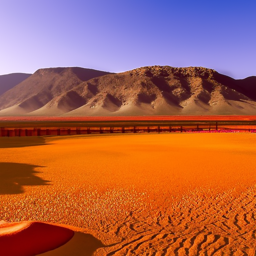
a photo of an oasis
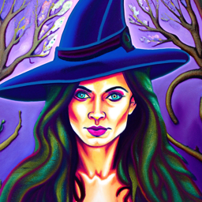
an oil painting of a witch
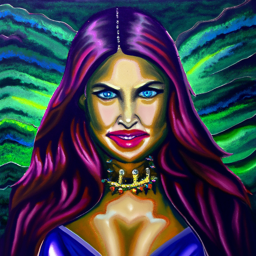
Part 1: Sampling Loops
1.1 Implementing the Forward Process
I use torch.randn_like(image) to add noise distributed to a standard normal distribution that is the same shape as the image, and index into alphas_cumprod accordingly to get the alpha values at timestep t.
By running forward(im, t), I am able to produce a noisy version of the image at timestep t, where greater values of t result in a more noisy image.
code
original
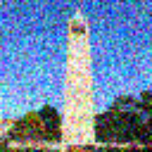
noise level 250
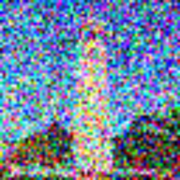
noise level 500
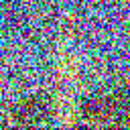
noise level 750
1.2 Classical Denoising
I try denoising using classical methods: with torchvision.transforms.functional.gaussian_blur to remove the higher frequency components. I use kernel_size of 10 and the default calculated sigma. This is pretty ineffective as shown below. This is why we’re moving beyond classical methods into diffusion models!
noise level 250
noise level 500
noise level 750
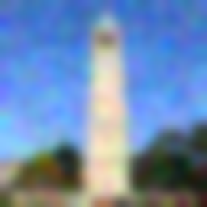
Gaussian blurred noise level 250
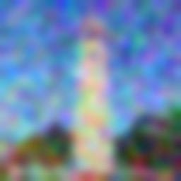
Gaussian blurred noise level 500
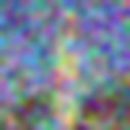
Gaussian blurred noise level 750
1.3 One-Step Denoising
The idea behind diffusion models is the following: it’s easy to add noise to an image, so our model aims to “reverse” this process by denoising the image.
The idea behind one-step denoising is estimating the noise within an image using a pretrained diffusion model and removing it to obtain a less noisy image. We use the text embedding of “a high quality photo”. After estimating the noise, I rearrange the equation to solve for the clean image, which requires subtracting the scaled noise and dividing the result by the sqrt of alpha.
noise level 250
noise level 500
noise level 750
one step denoised noise level 250
one step denoised level 500
one step denoised level 750
1.4 Iterative Denoising
Later, using strided timesteps that are too large causes issues. But we don’t worry about that here! The idea behind strided timesteps is to save time by computing multiple steps at once. I use the strided_timesteps denoted in this problem with stride of 30. The iteratively denoised campanile seems much more clear, but also more deviated from the original. The one steps is more blurry, and the Gaussian blurred campanile still has a lot of colorful noise.
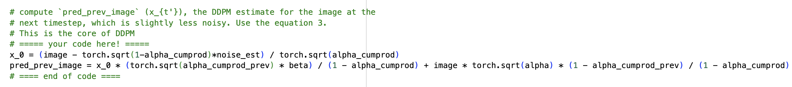
code
t=90
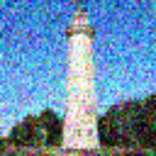
t=240
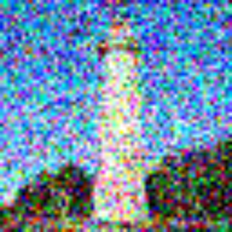
t=390
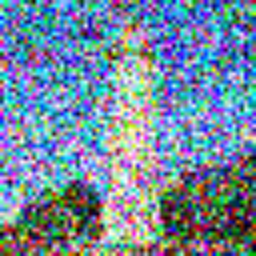
t=540
t=690
original
final iteratively denoised
one step denoised
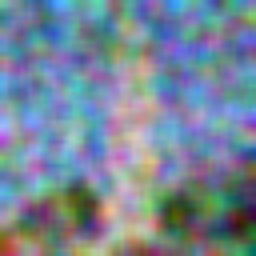
gaussian blurred
1.5 Diffusion Model Sampling
To generate random photos, I use the prompt “a high quality photo” and generate random noise in the shape of the image torch.randn. Then, I use my iterative_denoise function to generate the following images. At the beginning, a lot of people were being generated, which freaked me out so I generated more images.
sample 1
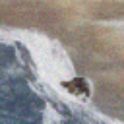
sample 2
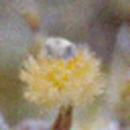
sample 3
sample 4
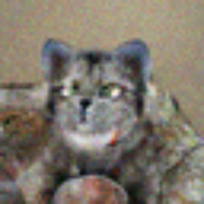
sample 5
1.6 Classifier-Free Guidance (CFG)
To get more high quality images, we generate an unconditional noise estimate in addition to a conditional noise estimate, calling UNet twice, and use a combination of these two to generate a noise estimate. You can tell that the images in this section are more high quality than the previous, and overall much more vibrant!
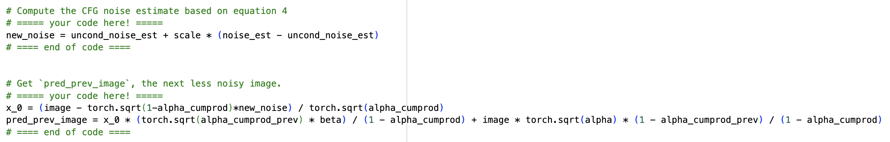
code
sample 1
sample 2
sample 3
sample 4
sample 5
1.7 Image-to-image Translation
I run iterative_denoise_cfg with different noise levels, [1, 3, 5, 7, 10, 20]. As the noise level increases, we go from the “high quality photo” closer and closer to the campanile. It is interesting to see how the general shape and background look good in the beginning, but the details get closer to the original image as we add more noise.
original image
noise 1
noise 3
noise 5
noise 7
noise 10
noise 20
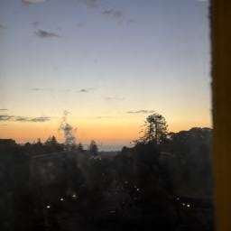
original image
noise 1
noise 3
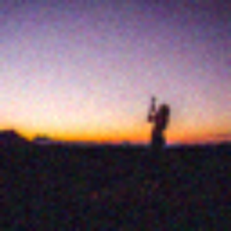
noise 5
noise 7
noise 10
noise 20
original image
noise 1
noise 3
noise 5
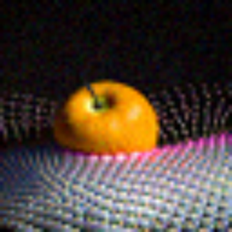
noise 7
noise 10
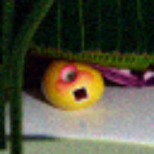
noise 20
1.7.1 Editing Hand-Drawn and Web Images
I now try using images from online or hand drawn images. It looks like the model may have included some nudity for the drawing of the guy with the spiky hair so I redacted one of the images :/ It’s interesting to see how we go from people to more mushroom shaped to my mushroom. For the dino, the evolution seems to be mostly in the colors, and it’s funny how we go from realistic people to a penguin.
spiky hair man
noise 1
noise 3 (redacted)
noise 5
noise 7
noise 10
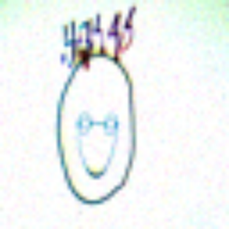
noise 20
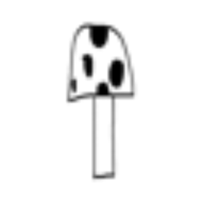
mushroom
noise 1
noise 3
noise 5
noise 7
noise 10
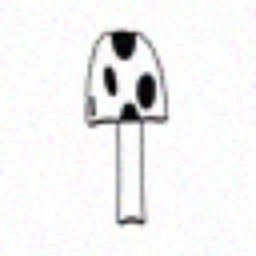
noise 20
dino
noise 1
noise 3
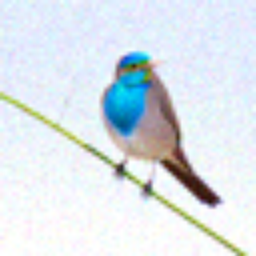
noise 5
noise 7
noise 10
noise 20
penguin
noise 1
noise 3
noise 5
noise 7
noise 10
noise 20
1.7.2 Inpainting
For inpainting, I make minor edits to the iterative_denoise_cfg function. I add extra code to compute the noised original at this timestep and another line to utilize the mask when constructing the new image. I tried the pumpkin image twice and it filled it in with a pumpkin twice! I have to alter the step size within strided timestpes to be 10 to achieve better results!
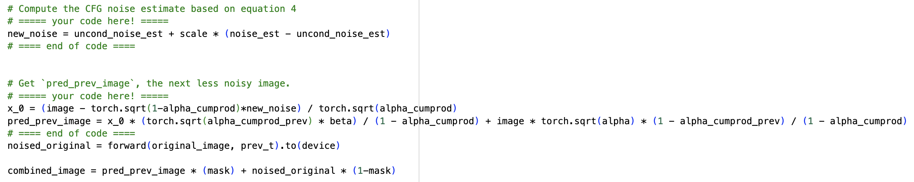
code
og campanile
mask
to replace
final image
og pumpkin
mask
to replace
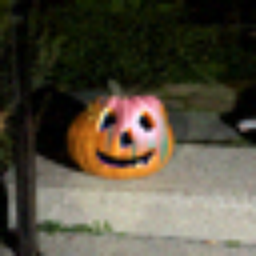
final image
original image
mask
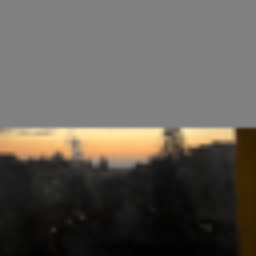
to replace
final image
1.7.3 Text-Conditional Image-to-image Translation
For this step, I use a text prompt to guide a given image to also look like a text prompt. I call iterative_denoise_cfg with a different value for the noise and the greater the noise, the closer the image is to the original image.
Prompts I used: "a christmas themed dog", "a photo of an oasis", "an oil painting of a princess".
It is interesting to observe how the positioning and coloring of the dog is more like a pumpkin, and how the background of the oasis resembles the oasis more. The princess and campanile interpretation is quite interesting, I'm not sure why the arms are still out though!
og image: pumpkin
dog noise 1
dog noise 3
dog noise 5
dog noise 7
dog noise 10
dog noise 20
og image: sunset
oasis noise 1
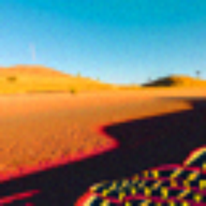
oasis noise 3
oasis noise 5
oasis noise 7
oasis noise 10
oasis noise 20
og image: campanile
princess noise 1
princess noise 3
princess noise 5
princess noise 7
princess noise 10
princess noise 20
1.8 Visual Anagrams
I create visual anagrams which look like two different prompts right side up or upside down by obtaining two noise estimates, each with different orientation and prompt. I then flip the second noise estimate which corresponds to the flipped image, and average these two noise estimates. Here’s my two results and prompts!
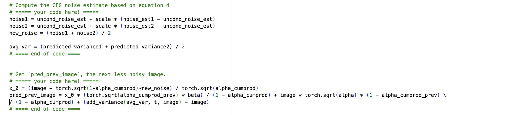
code
an oil painting of two cats
an oil painting of two chess pieces
an oil painting of an urban city
an oil painting of a witch
1.9 Hybrid Images
To create hybrid images, I use a similar approach to part 1.8. Except these two noise estimates are computed on the image right side up with different prompts. I then use torchvision.transforms.function.gaussian_blur to get the low frequency and high frequency components of the noise estimates (low by just calling gaussian_blur on the noise, and the high by subtracting the gaussian_blur value from the original noise estimate). Then, I add these two noise estimates together to get the final hybrid images!
code
near: an oil painting of two chess pieces
far: an oil painting of two cats
near: an oil painting of an urban city
far: an oil painting of a witch
Part B: Training a Diffusion Model
Part 1: Training a Single-Step Denoising UNet
1.1 Implementing the UNet
Alright! In this part, I build a UNet based on the architecture shown below. I build standard operations, that are pieced together to create our final architecture.
1.2 Using the UNet to Train a Denoiser
Now that our model is built, we must train it! To train our model, we use MNIST digits. To learn how to load the images from MNIST I used this video.
I created a function to add noise based on a noise level for images–results are visualized below.
level 0
level 0.2
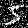
level 0.4
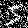
level 0.6
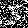
level 0.8
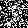
level 1
1.2.1 Training
While training with noise level 0.5, I add noise to each image, then use the model to predict the clean image corresponding to the noisy image. To calculate loss we take L2 loss over the clean image and the predicted clean image. We can see that epoch 5 has much more clear digits than epoch 1 which makes sense, because more training has happened by then!
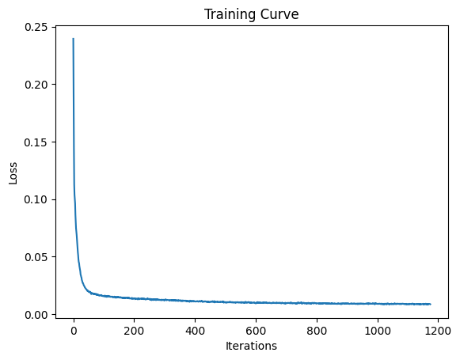
loss curve
input image
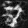
epoch 1
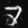
epoch 5
input image
epoch 1
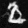
epoch 5
input image
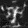
epoch 1
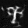
epoch 5
1.2.2 Out-of-Distribution Testing
Here, we sample out-of-distribution noise levels after the model is trained. The results on the number 7 for these two examples seem mostly legible until noise levels 0.8 and 1, where the resulting image features artifacts in the 7.
level 0
level 0.2
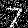
level 0.4
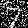
level 0.6
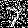
level 0.8
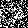
level 1
denoised results
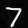
level 0
level 0.2
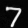
level 0.4
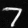
level 0.6
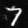
level 0.8
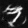
level 1
1.2.3 Denoising Pure Noise
We do an interesting experiment here, training the model with input images of pure noise. Because we’re minimizing mean squared error, we’re finding the “centroid” of all of our training images, or our average digit. This is a process of generating the average image because we start from noise. We can see that our average digit has a lot of curves, perhaps from lots of numbers having curves within them. Our image at 5 epochs looks smoother and it seems like we converge on the average image by then!
input image
epoch 1
epoch 5
input image
epoch 1
epoch 5
input image
epoch 1
epoch 5
Part 2: Training a Flow Matching Model
2.1 Adding Time Conditioning to UNet
Now, instead of predicting the noisy image from a clean image, we predict the flow, or the velocity from a noisy image to a clean image. We do this by adding time conditioning to UNet with FCBlocks. Here is a diagram showing the new time conditioned unet and the FCBlock that is used to accomplish this.
2.2 Training the UNet
Now that we have our time conditioned UNet, we have to train it! We use the following algorithm for training, where we randomly choose a training image and timestep from 0 to 1, add noise to get a noised image, and train our model to predict the flow at a certain timestep. I use a batch size of 64, an exponential learning rate decay, training for 10 epochs.
training curve
training algorithm
2.3 Sampling from the UNet
Here, I implement sampling with the following algorithm. You can see that at epoch 1 many of the digits seem like scribbles or blobs, but by epoch 10, most of the digits are legible! At first, I didn’t realize that I had to move my models to the device, and it was taking 5 hours. Later, it only took 6 minutes to train my model :’)
sampling algorithm
epoch 1
epoch 5
epoch 10
2.4 Adding Class-Conditioning to UNet
Instead of only conditioning on time, we can also add class-conditioning (on the classes for digits 0-9) to our architecture! We do this by adding 2 more FCBlocks. We create a one-hot vector for our class conditioning, and set it to 0 if we don’t want it to condition on the class. We also only use the class conditioning vector 90% of the time (or dropout 10% of the time). The dimensions here were kind of annoying but I figured it out eventually!
2.5 Training the UNet
Now we train with class conditioning as well as time conditioning. This is very similar to the last part, except we set the class to the zero vector (dropout) with p_cond.
training algorithm
training curve
2.6 Sampling from the UNet
Now, we sample from our class conditioned UNet! This is also pretty similar to the previous section, except we use classifier-free guidance to get our estimate for the next x_t. Results at epoch 1 are guessable, and results at epoch 10 are much crisper.
sampling algorithm
epoch 1
epoch 5
epoch 10
To get rid of the annoying learning rate scheduler, I first tried the average learning rate which came out to be 1e-4. The results were not quite as good, so I tried a larger learning rate (1e-3) which had results comparable to that of the scheduler. I didn’t want to do 1e-2 for fear it would be too large, as that is our starting learning rate.
epoch 1
epoch 5
epoch 10
This project helped solidify my understanding of training and sampling models from scratch! I thought it was cool to get a more technical understanding and look under a hood, after a more intuition based understanding of diffusion models presented in lecture.